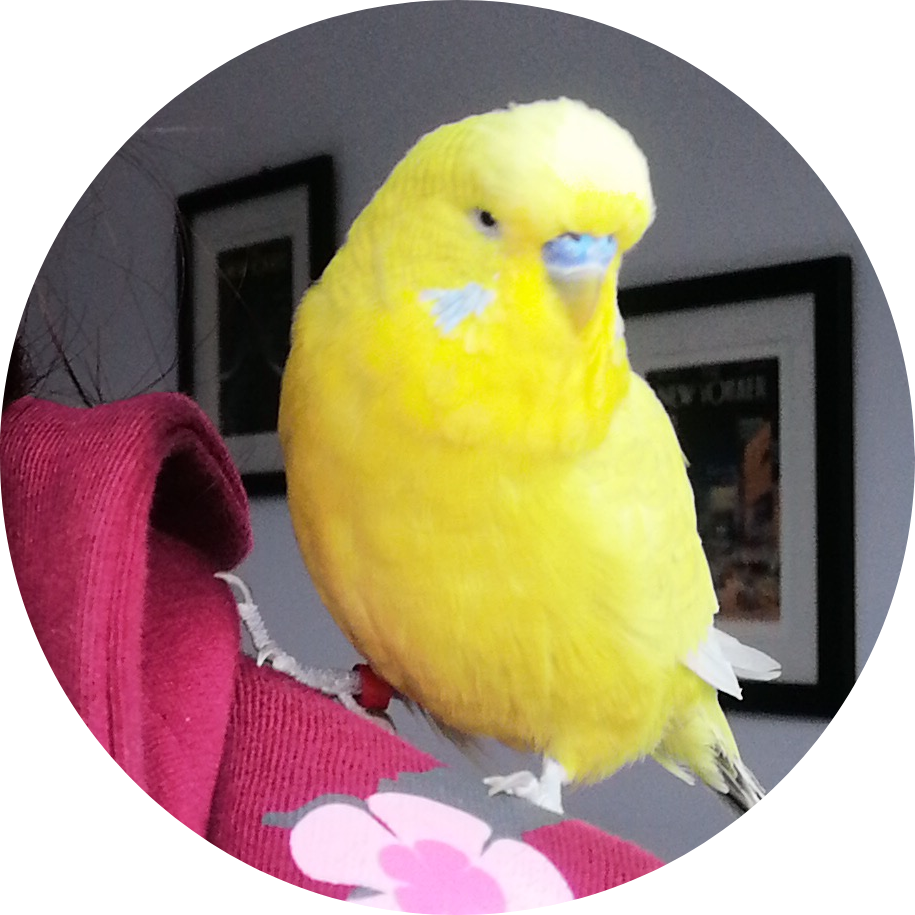

|  |
Freya HutchinsAn undergraduate computing student at The Open University. A former archaeologist and a current student studying for an undergraduate degree in Computing and IT BSc (Hons). I live with my husband and our budgie (that's him in the picture!) in North Wales. This CV website was made for the The Complete 2022 Web Development Bootcamp's HTML module and is made solely in HTML to demostrate a website made in one language. |
Udemy (Summer 2022)
The Open University (2020 - present)
Modules completed:
The University of Chester (2010 - 2013)
| Dates | Experience |
|---|---|
| 2022 - | Volunteer Junior Web Developer at GamblersDen |
| 2018 - 2020 | Data Entry Clerk (involved coding macros in VBA) |
| 2018 | Field Archaeologist at Border Archaeology Ltd. |
| HTML | ⭐⭐⭐⭐⭐ |
|
||
| CSS | ⭐⭐⭐⭐ |
|
||
| Java | ⭐⭐⭐ |
|